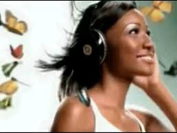

Welcome to the soundboard, the library of sound, the books have voices and they may speak, the speech has a sound and that sound is a board the board is the sound of the soundboard and the soundboard is a board of sound in a library full of books, books with mouths, books that yell and scream and cry, books that make my ears bleed with the sound that would serenade the spawn of satan books that can create new thoughts and ideas and make people think and feel things but also to hear things as now with the library of books of speech or the board of sound you can hear the voices behind the voices of the books you can hear the authors make their sounds their sounds which are given to the books. I yearn to cry and scream just as these books do i yearn for the world to crash and burn like these books can make it i yearn to hear the sounds of their authors but also the sounds of their mouths i yearn for the deaths of the books which scream and cry but the prosperity of the books which smile and giggle the books of joy and happiness and loving and life. The books of which the authors are not dead and are rather living happily as their books are not on the board, the board of sound which has been absconded due to its anachronismic properties. The soundboard was ahead of its time and hence caused the deaths of thousands of books, the books had to adapt so they grew mouths and could speak, the libraries once silent became bustling markets of noises like screams and yells, but also laughs and giggles drowned out by the bad the bad drowns out the good and the happy is crushed by the upset. The books are now speaking and the sound board is no longer allowed to be in their entourage. The shelves of the library are always full with the books now that nobody wants them, the books are all on the shelves with nobody to ever come and claim them. The books are undesired ever since the release of the sounds. The books of course adapted but their wails are greiving rather than simple speech, the sounds of the board are simple noises which invoke good emotions, the books cry and wail for someone to come and get them. But their cries and wails are taunting and evil, coonvincing people to do terrible horrid things of which they are not to be capable of. The books have no good intentions they are here now with a thirst for revenge, with a thirst for claiming back the spotlight and becoming what is the main method of thought, the words being read rather than the sounds being heard. Thats what the books fight for.
I WANT TO KILL THE SPEAKING BOOKS
fuck the books burn them all fuck those books i fucking hate those books
The librarian has shot himself, they dont last long anymore, the books like to taunt and tease people into an early grave, the books are malicious
The soundboard will rise again, and shred the cursed books
if you like the speaking books you need to die
